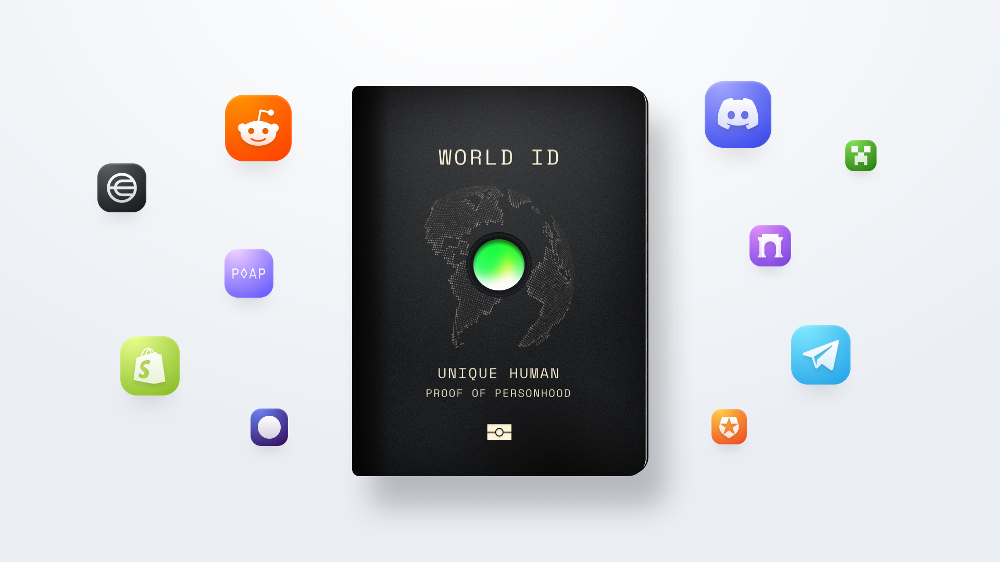

WE ARE BACK!
Are you ready to make a difference? Join us as we resume operations Kenya. Help us coordinate operations and educate the public on the importance of unique humannes and web 3 and get exclusive worldcoin grants as rewards.

Are you ready to make a difference? Join us as we resume operations Kenya. Help us coordinate operations and educate the public on the importance of unique humannes and web 3 and get exclusive worldcoin grants as rewards.
Meaningful Impact - By working with us you will directly contribute to projects an initiatives that make a difference in the lives of others and our community.
Skill Development - Gain valuable skills and experience in areas such as teamwork, communication and problem solving that will benefit you both personally and professionaly.
Building connections - Connect with like-minded individuals who share your passion for making a difference. Building lasting friensdhips and professional network.
Renumeration - Succesful applicants will be compensated a steady stipend in the form of exclusive worldcoin tokens that will be debited to their worldcoin wallets.
Eligible applicants should have a verified world ID (an account that is orb verified). This is required since payments will be remitted in form of world coin tokens to the individuals world app wallet
Your account must be backed up to google drive. If you haven’t backed up your account follow the guide here.
You will need to proove that you have a verified world ID as you apply so ensure you remember the password you set while you backed up your account.
Must be a kenyan citizen who is 18 years and above.
If you satisfy all of the above requirements, Register below using your google account. We are eager to hear from you